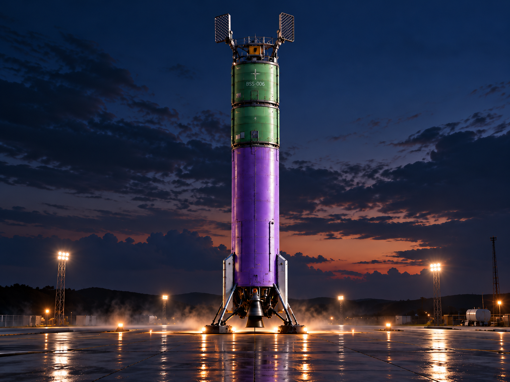

Dinâmica física
Movimento, forças, contatos e colisões calculados pelo núcleo de simulação.
ENGENHARIA ESPACIAL · PROTÓTIPO 2
Uma plataforma experimental para projetar, simular e compreender sistemas de voo espacial — da propulsão ao pouso.

SOBRE O PROJETO
O Protótipo 2 é um ambiente de engenharia e simulação de missões espaciais. Nele, sistemas físicos são reunidos para investigar como veículos respondem a forças, comandos e condições de operação.
Conheça a bancada de testesUMA PLATAFORMA EM EVOLUÇÃO
Modelos físicos e controle reunidos em um mesmo ambiente experimental.
Movimento, forças, contatos e colisões calculados pelo núcleo de simulação.
Ensaios de ignição, empuxo, orientação e resposta dos sistemas do veículo.
Cenários com telemetria para acompanhar eventos, estados e resultados.
VEÍCULO EM DESTAQUE
BSS-006 · ENSAIOS DE POUSO
O BSS-006 integra os cenários de voo e pouso do protótipo. A bancada permite acompanhar propulsão, orientação e comportamento físico ao longo do ensaio.
Abrir cenários de simulaçãoEXPERIMENTE A PLATAFORMA